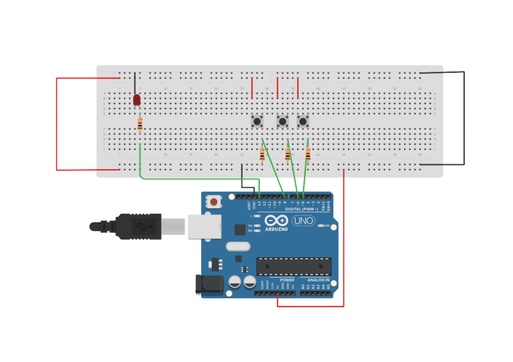

PROJECT 07: PASSWORD LOCK
Sequence Detection Logic
Mission Brief
Simple locks use one key. Smart locks use a code. In this project, you will build a digital lock that only opens (turns on the LED) if you press three buttons in the exact correct order (1 -> 3 -> 2).
Key Components
- Arduino Uno R3
- 3x Push Buttons
- 1x LED
- 3x Resistors (for buttons)
- 1x Resistor (for LED)
- Jumper Wires
Circuit Diagram

Pin Connections
| Arduino Pin | Component Connection |
|---|---|
| Pin 9 | Button 1 (Left) |
| Pin 7 | Button 2 (Middle) |
| Pin 5 | Button 3 (Right) |
| Pin 8 | LED Anode (via Resistor) |
Step-by-Step Instructions
- Place three buttons on the breadboard.
- Connect one side of all buttons to 5V.
- Connect the other side of each button to a 10k resistor going to GND (Pull-down).
- Connect the signal wire from Button 1 to Pin 9.
- Connect the signal wire from Button 2 to Pin 7.
- Connect the signal wire from Button 3 to Pin 5.
- Connect an LED to Pin 8 (with a 220Ω resistor).
- Upload the code below.
Arduino Code
/* PASSWORD LOCK (Sequence: 1 -> 3 -> 2)
* Button 1: Pin 9
* Button 2: Pin 7
* Button 3: Pin 5
* LED: Pin 8 (Active LOW logic used in logic but wired for Active HIGH here)
*/
const int BTN1_PIN = 9;
const int BTN2_PIN = 7;
const int BTN3_PIN = 5;
const int LED_PIN = 8;
// Password sequence: Button 1, then 3, then 2
const int password[] = {1, 3, 2};
const int PASS_LEN = 3;
int position = 0; // Current progress
// State variables
int lastB1 = LOW;
int lastB2 = LOW;
int lastB3 = LOW;
void setup() {
pinMode(BTN1_PIN, INPUT);
pinMode(BTN2_PIN, INPUT);
pinMode(BTN3_PIN, INPUT);
pinMode(LED_PIN, OUTPUT);
digitalWrite(LED_PIN, LOW); // Start Locked (LED OFF)
Serial.begin(9600);
Serial.println("System Ready: Enter Code 1-3-2");
}
void loop() {
int b1 = digitalRead(BTN1_PIN);
int b2 = digitalRead(BTN2_PIN);
int b3 = digitalRead(BTN3_PIN);
// Detect Presses (Rising Edge)
if (b1 == HIGH && lastB1 == LOW) { handleButton(1); delay(50); }
if (b2 == HIGH && lastB2 == LOW) { handleButton(2); delay(50); }
if (b3 == HIGH && lastB3 == LOW) { handleButton(3); delay(50); }
lastB1 = b1;
lastB2 = b2;
lastB3 = b3;
}
void handleButton(int btnNumber) {
Serial.print("Pressed: ");
Serial.println(btnNumber);
// Check if correct button for current step
if (password[position] == btnNumber) {
position++;
Serial.print("Correct! Progress: ");
Serial.println(position);
// Check if unlocked
if (position == PASS_LEN) {
Serial.println("UNLOCKED!");
digitalWrite(LED_PIN, HIGH); // LED ON
delay(5000); // Wait 5 Seconds
digitalWrite(LED_PIN, LOW); // Lock again
position = 0; // Reset
}
} else {
// Wrong button
Serial.println("WRONG! Resetting...");
position = 0;
// Error Blink
for(int i=0; i<3; i++){
digitalWrite(LED_PIN, HIGH); delay(100);
digitalWrite(LED_PIN, LOW); delay(100);
}
}
}
How It Works
- Sequence Tracking:
-
Arrays:
We store the secret code in an array:int password[] = {1, 3, 2};. -
Position Variable:
The variablepositionstarts at 0. If you press the correct button for slot 0, it increases to 1. If you press the wrong button, it resets to 0. - State Machines:
-
Reset on Error:
Security systems must be strict. Any wrong press immediately wipes your progress, forcing you to start over.
Expected Output
The LED is OFF. Press Button 1, nothing visible happens (but internal counter advances). Press Button 3, still nothing. Press Button 2, and the LED turns ON for 5 seconds. If you press any wrong button, the LED blinks rapidly to indicate error.
What You Learned
- How to compare user input against a stored array (password).
- Using variables to track the "State" or progress of a system.
- Handling multiple inputs to trigger a single timed output.
Next Steps / Extension Ideas
Add a buzzer that beeps once for a correct press and gives a harsh "Buzz" for a wrong press. Or, change the code to require a 4-digit PIN!